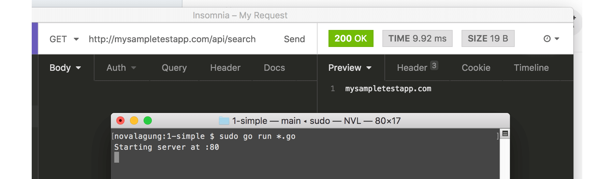
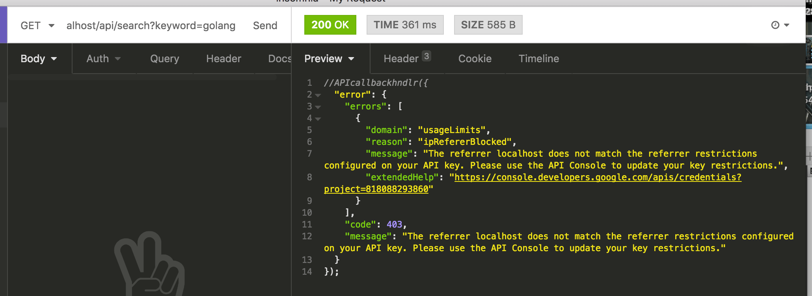
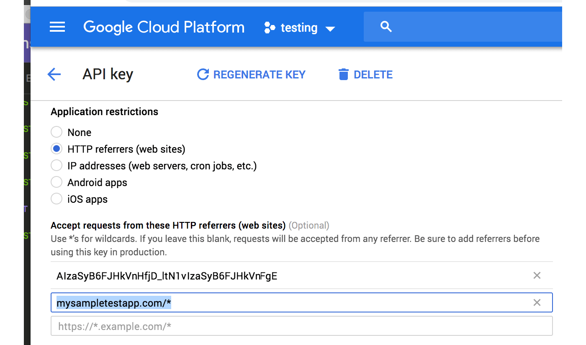

D.2. Google API Search Dengan Timeout
Pada chapter ini kita akan mencoba studi kasus yaitu membuat web service API untuk wrap pencarian ke Google Search API.
Proses pembelajaran dilakukan dengan praktek membuat sebuah aplikasi web service kecil, yang tugasnya melakukan pencarian data. Nantinya akan dibuat juga middleware MiddlewareUtility, tugasnya menyisipkan informasi origin dispatcher request, ke dalam context request, sebelum akhirnya sampai pada handler endpoint yg sedang diakses.
D.2.1. Context Value
Ok, langsung saja, siapkan folder project baru dengan struktur seperti berikut.
mkdir chapter-d2
cd chapter-d2
go mod init chapter-d2
# then prepare underneath structures
tree .
.
├── main.go
└── middleware.go
0 directories, 2 files
Pada file middleware.go isi dengan CustomMux yang pada pembahasan-pembahasan sebelumnya sudah pernah kita gunakan.
package main
import "net/http"
type CustomMux struct {
http.ServeMux
middlewares []func(next http.Handler) http.Handler
}
func (c *CustomMux) RegisterMiddleware(next func(next http.Handler) http.Handler) {
c.middlewares = append(c.middlewares, next)
}
func (c *CustomMux) ServeHTTP(w http.ResponseWriter, r *http.Request) {
var current http.Handler = &c.ServeMux
for _, next := range c.middlewares {
current = next(current)
}
current.ServeHTTP(w, r)
}
Lalu pada file main.go, buat satu buah endpoint /api/search, dengan isi handler menampilkan data from yang diambil dari request context. Data from ini di set ke dalam request context oleh middleware MiddlewareUtility.
package main
import (
"context"
"fmt"
"net/http"
)
type M map[string]interface{}
func main() {
mux := new(CustomMux)
mux.RegisterMiddleware(MiddlewareUtility)
mux.HandleFunc("/api/search", func(w http.ResponseWriter, r *http.Request) {
from := r.Context().Value("from").(string)
w.Write([]byte(from))
})
server := new(http.Server)
server.Handler = mux
server.Addr = ":80"
fmt.Println("Starting server at", server.Addr)
server.ListenAndServe()
}
Cara mengakses context request adalah lewat method .Context() milik objek request. Lalu chain dengan method Value() untuk mengambil data sesuai dengan key yang disisipkan pada parameter.
Untuk sekarang, tugas dari endpoint /api/search hanya menampilkan data tersebut, tidak lebih.
Selanjutnya siapkan middleware MiddlewareUtility. Di dalamnya, ada pengecekan header Referer, jika ada maka dijadikan value data from (yang kemudian disimpan pada context); sedangkan jika tidak ada maka value-nya berasal dari property .Host milik objek request.
func MiddlewareUtility(next http.Handler) http.Handler {
return http.HandlerFunc(func(w http.ResponseWriter, r *http.Request) {
ctx := r.Context()
if ctx == nil {
ctx = context.Background()
}
from := r.Header.Get("Referer")
if from == "" {
from = r.Host
}
ctx = context.WithValue(ctx, "from", from)
requestWithContext := r.WithContext(ctx)
next.ServeHTTP(w, requestWithContext)
})
}
Objek request context bisa didapat lewat pengaksesan method .Context() milik *http.Request. Objek ini bertipe context.Context dengan zero type adalah nil.
Pada kode di atas, jika context adalah nil, maka di-inisialisasi dengan context baru lewat context.Background().
Objek ctx yang merupakan context.Context di sini kita tempeli data from. Cara melakukannya dengan memanggil statement context.WithValue() dengan disisipi 3 buah parameter.
- Parameter ke-1, isinya adalah objek context.
- Parameter ke-2, isinya key dari data yang akan disimpan.
- Parameter ke-3, adalah value data yang akan disimpan.
Fungsi .WithValue() di atas mengembalikan objek context, isinya adalah objek context yang disisipkan di parameter pertama pemanggilan fungsi, tapi sudah disisipi data dengan key dari parameter ke-2 dan value dari parameter ke-3. Jadi tampung saja objek context kembalian statement ini ke objek yang sama, yaitu ctx.
Ok, sekarang objek ctx sudah dimodifikasi. Objek ini perlu untuk ditempelkan lagi ke objek request. Caranya dengan mengakses method .WithContext() milik objek request, lalu gunakan nilai baliknya pada next.ServeHTTP().
Jalankan aplikasi, hasilnya kurang lebih seperti gambar berikut.

O iya, penulis tidak menggunakan http://localhost untuk mengakses aplikasi, melainkan menggunakan http://mysampletestapp.com, dengan catatan domain ini sudah saya arahkan ke 127.0.0.1.

Ok, untuk sekarang sepertinya cukup jelas mengenai penggunaan context pada objek http request. Tinggal kembangkan saja sesuai kebutuhan, seperti contohnya: context untuk menyimpan data session, yang diambil dari database sessuai dengan session id nya.
D.2.2. Context Timeout & Cancellation
Melanjutkan program yang sudah dibuat, nantinya pada endpoint /api/search akan dilakukan sebuah pencarian ke Google sesuai dengan keyword yang diinginkan. Pencarian dilakukan dengan memanfaatkan Custom Search JSON API milik Google.
Sekarang ubah isi handler endpoint tersebut menjadi seperti berikut.
mux.HandleFunc("/api/search", func(w http.ResponseWriter, r *http.Request) {
ctx := r.Context()
keyword := r.URL.Query().Get("keyword")
chanRes := make(chan []byte)
chanErr := make(chan error)
go doSearch(ctx, keyword, chanRes, chanErr)
select {
case res := <-chanRes:
w.Header().Set("Content-type", "application/json")
w.Write(res)
case err := <-chanErr:
http.Error(w, err.Error(), http.StatusInternalServerError)
}
})
Proses pencarian dilakukan secara asynchronous lewat fungsi doSearch() yang nantinya akan kita buat. Pemanggilannya menggunakan keyword go dan disisipkan beberapa parameter yang dua di antaranya bertipe channel.
- Channel
chanRes, digunakan jika proses pencarian sukses. Data hasil pencarian dilempar ke main routine lewat channel ini, untuk kemudian diteruskan sebagai response endpoint - Channel
chanErr, digunakan untuk pass objek error, jika memang terjadi error.
Ok, lanjut, siapkan dua buah konstanta baru.
Konstanta
SEARCH_MAX_DURATION, digunakan untuk menge-set max response time. Jika melebihi, maka request langsung di-cancel.var SEARCH_MAX_DURATION = 4 * time.SecondKonstanta
GOOGLE_SEARCH_API_KEY, ini merupakan API key yang diperlukan dalam penggunaan Custom Search API. Silakan merujuk ke laman Google Cloud Platform untuk mendapatkan API key.var GOOGLE_SEARCH_API_KEY = "ASSVnHfjD_ltXXXXSyB6WWWWWWWWveMFgE"
Sekarang kita mulai masuk ke bagian pembuatan fungsi pencarian doSearch(). Silakan tulis kode berikut.
func doSearch(
ctx context.Context,
keyword string,
chanRes chan []byte,
chanErr chan error,
) {
innerChanRes := make(chan []byte)
innerChanErr := make(chan error)
url := "https://www.googleapis.com/customsearch/v1"
url = fmt.Sprintf("%s?key=%s", url, GOOGLE_SEARCH_API_KEY)
url = fmt.Sprintf("%s&cx=017576662512468239146:omuauf_lfve", url)
url = fmt.Sprintf("%s&callback=hndlr", url)
url = fmt.Sprintf("%s&q=%s", url, keyword)
from := ctx.Value("from").(string)
// ...
}
Di dalam fungsi tersebut, url pencarian dibentuk, data API key dan keyword pencarian disisipkan. Selain itu disiapkan pula innerChanRes dan innerChanErr yang kegunaannya mirip seperti objek channel yang disisipkan pada pemanggilan fungsi, hanya saja dua channel baru ini digunakan hanya dalam fungsi ini saja.
Lanjut tulis kode berikut.
ctx, cancel := context.WithTimeout(ctx, SEARCH_MAX_DURATION)
defer cancel()
req, err := http.NewRequest("GET", url, nil)
if err != nil {
innerChanErr <- err
return
}
req = req.WithContext(ctx)
req.Header.Set("Referer", from)
transport := new(http.Transport)
client := new(http.Client)
client.Transport = transport
Objek ctx yang di-pass dari luar, dibungkus lagi menggunakan context.WithTimeout(). Fungsi ini mengembalikan objek context yang sudah ditambahi data deadline. Tepat setelah statement ini dieksekusi, dalam durasi SEARCH_MAX_DURATION context akan di-cancel.
Pengesetan deadline context bisa dilakukan lewat
context.WithTimeout(), atau bisa juga lewatcontext.WithDeadline(). Perbedaannya pada fungsi.WithDeadline()parameter yang disisipkan bertipetime.Time.
Disiapkan juga objek req yang merupakan objek request. Objek ini dibungkus menggunakan req.WithContext() dengan isi parameter objek ctx, menjadikan objek context yang sudah kita buat tertempel pada request ini. Kegunaannya nanti akan dibahas.
Selain itu, data from yang didapat dari request context disisipkan sebagai request header pada objek req.
Disiapkan juga objek transport yang bertipe *http.Transport dan objek client yang bertipe *http.Client.
Setelah ini, tulis kode untuk dispatch request yang sudah dibuat lalu handle response nya. Jalankan proses-nya sebagai goroutine.
go func() {
resp, err := client.Do(req)
if err != nil {
innerChanErr <- err
return
}
if resp != nil {
defer resp.Body.Close()
resData, err := ioutil.ReadAll(resp.Body)
if err != nil {
innerChanErr <- err
return
}
innerChanRes <- resData
} else {
innerChanErr <- errors.New("No response")
}
}()
Request di-trigger lewat statement client.Do(req). Jika menghasilkan error, maka kirim informasi errornya ke channel innerChanErr. Cek juga objek response hasil request tersebut, jika kosong maka lempar sebuah error ke channel yang sama.
Baca response body, jika tidak ada masalah, lempar result-nya ke channel innerChanRes.
Selanjutnya, kita lakukan pengecekan menggunakan teknik select case untuk mengetahui channel mana yang menerima data.
select {
case res := <-innerChanRes:
chanRes <- res
return
case err := <-innerChanErr:
transport.CancelRequest(req)
chanErr <- err
return
case <-ctx.Done():
transport.CancelRequest(req)
chanErr <- errors.New("Search proccess exceed timeout")
return
}
Silakan perhatikan kode di atas, kita akan bahas 2 case pertama.
- Jika channel
innerChanResmendapati kiriman data, maka langsung diteruskan ke channelchanRes. - Jika channel
innerChanErrmendapati kiriman data, maka langsung diteruskan ke channelchanErr. Tak lupa cancel request lewat methodtransport.CancelRequest(req), ini diperlukan karena request gagal.
Untuk case terakhir case <-ctx.Done(), penjelasannya agak sedikit panjang. Objek context, memiliki method ctx.Done() yang mengembalikan channel. Channel ini akan melewatkan data jika deadline timeout context-nya terpenuhi. Dan jika itu terjadi, pada kode di atas langsung dikembalikan sebuah error ke channel chanErr dengan isi error Search proccess exceed timeout; tak lupa request-nya juga di-cancel.
Request perlu di-cancel karena jika waktu sudah mencapai deadline context (yaitu SEARCH_MAX_DURATION), pada saat tersebut bisa saja request belum selesai, maka dari itu request perlu di-cancel.
Jika di-summary, maka yang dilakukan oleh fungsi doSearch kurang lebih sebagai berikut sebagai berikut.
- Jika request pencarian tak lebih dari
SEARCH_MAX_DURATION:- Jika hasilnya sukses, maka kembalikan response body lewat channel
chanRes. - Jika hasilnya gagal, maka kembalikan error-nya lewat channel
chanErr.
- Jika hasilnya sukses, maka kembalikan response body lewat channel
- Jika request pencarian lebih dari
SEARCH_MAX_DURATION, maka dianggap timeout, langsung lempar error timeout ke channelchanErr.
Jalankan, lihat hasilnya.

Informasi tambahan: best practice mengenai cancelation context adalah untuk selalu menambahkan defer cancel() setelah (cancelation) context dibuat. Lebih detailnya silakan baca https://blog.golang.org/context.
D.2.3. Google Search API Restrictions Referer
Di bagian awal chapter ini, kita belajar mengenai context value. Kenapa penulis memilih menggunakan context untuk menyisipkan data referer, kenapa tidak contoh yg lebih umum seperti session dan lainnya? sebenarnya ada alasannya.
Silakan coba akses kedua url berikut.
Harusnya yang dikembalikan sama, tapi kenyataannya pengaksesan lewat url localhost menghasilkan error.

Error message:
The referrer localhost does not match the referrer restrictions configured on your API key. Please use the API Console to update your key restrictions.
Error di atas muncul karena, host localhost belum didaftarkan pada API console. Berbeda dengan mysampletestapp.com yang sudah didaftarkan, host ini berhak mengakses menggunakan API key yang kita gunakan.
